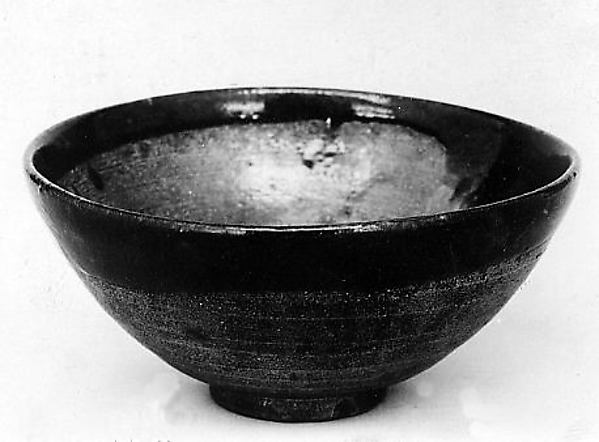

CERAMICS / SHIGARAKI
Shigaraki, Shiga
Shigaraki: Finding Texture in White
White ceramics are not all alike. Some whites feel soft, some reveal hints of clay, and others catch a delicate shadow. If Shigaraki first brings tanuki figures to mind, an everyday bowl offers another way into the region.

This regional example is separate from the contemporary maker discussed below.
01 / LOOK CLOSER
Begin with your own senses
A new white bowl need not match the bright porcelain already in your cupboard. Compare sheen, rim thickness and visible clay instead. Different whites can work together through their textures. Imagine how much of the rim will remain visible once the bowl is filled.
02 / MAKERS TODAY
古谷製陶所・古谷浩一 / Furutani Pottery and Hirokazu Furutani
Furutani Pottery describes its kohiki vessels as red clay covered with white slip; its official shop also features apple-shaped bowls. Hirokazu Furutani's work offers a way to explore the softness of white and practical forms. Begin with a size you would use, then learn more about the process from the maker.
Explore official works and profile ↗03 / AT YOUR TABLE
Three ideas for your table
The following are KOTO editorial suggestions.
Morning fruit
Serve a small portion in a white bowl on a wooden tray, letting the food supply the color.
Soup for lunch
Check capacity and serve bread separately, leaving a little of the bowl's rim visible.
A flowering branch
Use a separate small vase and keep it low enough to preserve sightlines across the table.
Before you choose
For surfaces that may change with use, ask the maker about preparation and cleaning. Do not assume one generic soaking or sealing method suits every piece. Choose something whose care routine fits your everyday life.
04 / EXPLORE THE REGION
Connect with the region
Use the cooperative to explore the region, then follow individual studios. Check Furutani's showroom guidance before visiting. A focused brief such as 'one white bowl' makes it easier to compare shapes and textures without trying to absorb everything at once.
信楽陶器工業協同組合 / Shigaraki ceramics industry cooperative ↗Regional background and sources
Shigaraki makes everything from tea vessels that emphasize the clay to tanuki figures and plant pots. Alongside its associations with unglazed ware, there are many expressions using glazes to discover.
Maker and regional information was checked against the linked official sources on November 8, 2026. Looking and table-setting ideas are editorial commentary, not interviews or maker endorsements. Consult current official guidance for visits and product specifications.